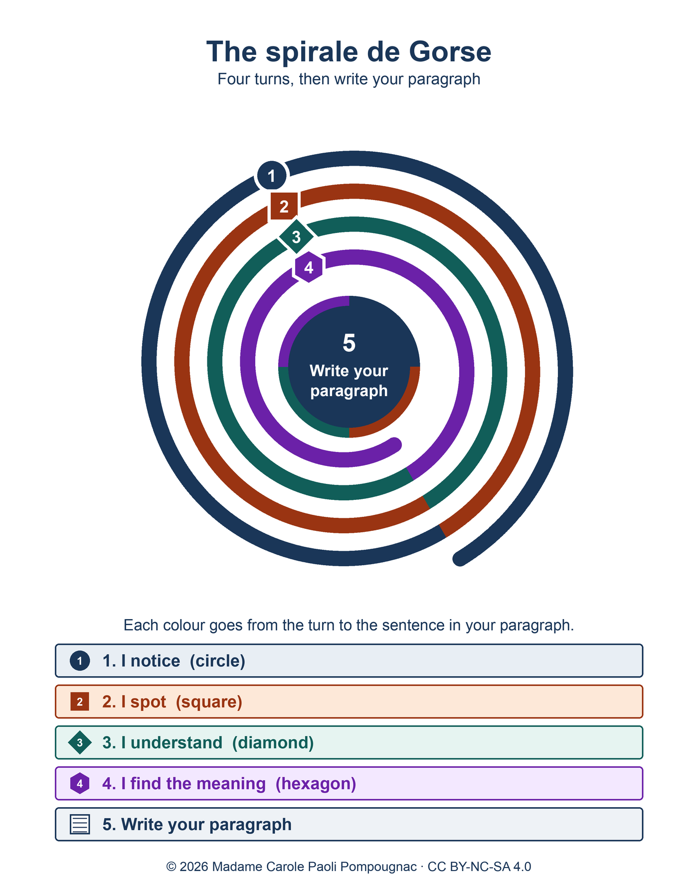

Anglais · CAP, bac pro et CFA · électricité · A2 to B1
The Electrician's Quote
Level: CAP Métiers de l'électricité and baccalauréat professionnel Métiers de l'électricité et de ses environnements connectés, CFA, English A2 to B1
Lesson: Expanding your vocabulary
En quoi cette leçon est utile
Programme. Programme d'enseignement de langues vivantes des classes préparant au certificat d'aptitude professionnelle et des classes préparant au baccalauréat professionnel : arrêté du 3 avril 2019, Journal officiel du 9 avril 2019, Bulletin officiel spécial n° 5 du 11 avril 2019 (NOR MENE1908627A). Ce programme unique est le texte de référence pour le CAP et le baccalauréat professionnel.
Où caser la leçon. Le programme ne numérote pas d'axes comme en lycée général et technologique. Il fixe deux contextes de communication : la vie quotidienne, personnelle, sociale et civique ; et la vie professionnelle. Cette leçon s'inscrit dans le contexte professionnel, et dans le premier objectif du programme : acquérir les moyens linguistiques permettant de communiquer avec des collègues, des partenaires ou des clients étrangers. Parmi les tâches prévues par le programme : accueillir un client, signaler et décrire une panne, fournir une explication adaptée, et comprendre l'essentiel d'un devis.
Niveaux. Pour le CAP, le niveau attendu à l'examen est A2. Pour le baccalauréat professionnel, le niveau attendu est B1+ en langue vivante A, et A2+ en langue vivante B.
Activités langagières. Le programme, comme le CECRL, distingue cinq activités : compréhension de l'écrit, compréhension de l'oral, expression écrite (production écrite), expression orale en continu, et expression orale en interaction (production orale).
Évaluation. Au baccalauréat professionnel, l'épreuve obligatoire de langue vivante est définie par l'arrêté du 17 juin 2020, Journal officiel du 5 juillet 2020, Bulletin officiel n° 30 du 23 juillet 2020 (NOR MENE2015195A), annexe V. Elle vérifie les cinq compétences, dans des situations de la vie quotidienne, sociale et professionnelle. Chacune compte pour un cinquième de la note sur 20, en CCF ou en épreuve ponctuelle.
Dans cette leçon. Compréhension de l'écrit : le lexique, les définitions, le tarif, les situations du client, le devis. Expression écrite : le dialogue à trous, les six répliques, le devis, la spirale de Gorse et le paragraphe. Expression orale en interaction : le jeu de rôle avec le client, puis la présentation du devis. Expression orale en continu : une présentation brève du devis, si un élève la fait seul. Compréhension de l'oral : il n'y a pas de document sonore ; on peut faire écouter la présentation du devis par le partenaire, et demander deux informations (le total, un verbe de main-d'œuvre).
Objectif de la leçon. Nommer en anglais les pièces, les outils et les pannes, expliquer le travail au client, puis établir un devis en euros, avec les pièces, la main-d'œuvre et la TVA à 20 pour cent, et le présenter avant le début des travaux. Ces gestes servent aussi pendant une PFMP en baccalauréat professionnel.
Dufy painted the story of electricity as a great wall of light. Your work is the opposite, and just as precise: you look at one part after another, you name the socket, the fuse box and the wiring, and you explain the price to the customer.
You are a CFA apprentice in electrical work, in CAP Métiers de l'électricité or in baccalauréat professionnel Métiers de l'électricité et de ses environnements connectés. In this lesson you will name the parts, the tools and the faults of the job in English, first in a conversation with a customer, then in a quote (un devis). The word bank gives the British word first. When an American word is different, it is given next to it. You must put the words into sentences, into speech, and into a quote with numbers. Do not only copy them from the list.
The customer speaks English. The work follows the rules in force in France. In the quote game, the prices are in euros, excluding VAT, and VAT is 20 percent.
Why this lesson matters
This lesson helps you talk to a customer in English, and explain a quote and its price before the work starts. You name the fault, describe the labour, and calculate the VAT, so the customer can agree. These are the same words you need on the job, and during a PFMP in baccalauréat professionnel.
1. Expanding your vocabulary
Parts and tools
- socket (US: outlet) [prise]
- switch [interrupteur]
- plug [fiche]
- fuse [fusible]
- fuse box (also: consumer unit) [tableau électrique]
- circuit breaker [disjoncteur]
- residual current device (RCD) [disjoncteur différentiel]
- cable (also: wiring) [câble ; câblage]
- earth wire (US: ground wire) [fil de terre]
- junction box [boîte de dérivation]
- light fitting [luminaire]
- ceiling rose [boîte de plafond]
- insulation tape [ruban isolant]
The quote
- quote (un devis) [devis]
- labour [main-d'œuvre]
- VAT [TVA]
- subtotal [total hors taxe]
- total [total toutes taxes comprises]
Faults
- short circuit [court-circuit]
- tripped (a tripped circuit breaker) [un disjoncteur qui a sauté]
- blown fuse [fusible grillé]
- no power [plus de courant]
- loose wire [fil desserré]
Labour verbs
- to replace [remplacer]
- to fit [poser, installer une pièce]
- to repair [réparer]
- to install [installer]
- to check [vérifier]
- to isolate [mettre hors tension, isoler le circuit]
- to rewire [recâbler]
- to test [tester]
Ouvrir le corrigéFermer le corrigé · Task 1 (answer key)
The word bank is the reference for this task. Students must put the words into sentences, into speech, and into a quote. The complete list, with the French, is given below.
Parts and tools
- socket (US: outlet) [prise]
- switch [interrupteur]
- plug [fiche]
- fuse [fusible]
- fuse box (also: consumer unit) [tableau électrique]
- circuit breaker [disjoncteur]
- residual current device (RCD) [disjoncteur différentiel]
- cable (also: wiring) [câble ; câblage]
- earth wire (US: ground wire) [fil de terre]
- junction box [boîte de dérivation]
- light fitting [luminaire]
- ceiling rose [boîte de plafond]
- insulation tape [ruban isolant]
The quote
- quote (un devis) [devis]
- labour [main-d'œuvre]
- VAT [TVA]
- subtotal [total hors taxe]
- total [total toutes taxes comprises]
Faults
- short circuit [court-circuit]
- tripped (a tripped circuit breaker) [un disjoncteur qui a sauté]
- blown fuse [fusible grillé]
- no power [plus de courant]
- loose wire [fil desserré]
Labour verbs
- to replace [remplacer]
- to fit [poser, installer une pièce]
- to repair [réparer]
- to install [installer]
- to check [vérifier]
- to isolate [mettre hors tension, isoler le circuit]
- to rewire [recâbler]
- to test [tester]
2. Match the word to the definition
Write the letter of the definition next to each word. Use the British word from the word bank.
- socket
- switch
- fuse
- circuit breaker
- fuse box
- earth wire
- residual current device
- junction box
- light fitting
- plug
- short circuit
- cable
A. the point on the wall where you connect a plug to get power
B. the part you press or turn to put a light on or off
C. a small part that melts and cuts the power if there is too much current
D. a switch in the fuse box that cuts the power if there is a fault
E. the box that holds the fuses or the circuit breakers for the house
F. the safety wire that takes current to the earth if something is wrong
G. a safety device that cuts the power if current leaks from the circuit
H. a small box where wires are joined
I. the lamp or light fixed to the wall or the ceiling
J. the part at the end of a flex that goes into a socket
K. a fault when current takes a wrong path, often with a trip or a blown fuse
L. the wire that carries the current from one point to another
Ouvrir le corrigéFermer le corrigé · Task 2 (answer key)
- socket : A. the point on the wall where you connect a plug to get power
- switch : B. the part you press or turn to put a light on or off
- fuse : C. a small part that melts and cuts the power if there is too much current
- circuit breaker : D. a switch in the fuse box that cuts the power if there is a fault
- fuse box : E. the box that holds the fuses or the circuit breakers for the house
- earth wire : F. the safety wire that takes current to the earth if something is wrong
- residual current device : G. a safety device that cuts the power if current leaks from the circuit
- junction box : H. a small box where wires are joined
- light fitting : I. the lamp or light fixed to the wall or the ceiling
- plug : J. the part at the end of a flex that goes into a socket
- short circuit : K. a fault when current takes a wrong path, often with a trip or a blown fuse
- cable : L. the wire that carries the current from one point to another
3. With the customer: complete the dialogue
A customer has called about a problem in the kitchen. The apprentice explains the work and says that a quote will follow. Fill each gap with one word or expression from the word bank. Use the British form. You may need a plural.
Customer: Good morning. Two (1) in the kitchen have no power, and a (2) does not work. I think the (3) has tripped.
Apprentice: Good morning. I am the apprentice electrician. First I will (4) the power at the (5). Then I will (6) the circuit.
Customer: Is it safe to stay in the house?
Apprentice: Yes, when the power is off on that circuit. I will (7) the two sockets and the switch, and I will check the (8).
Customer: How much will it cost?
Apprentice: I will prepare a (9) for you, with the parts, the labour and the VAT. We never start the work before you agree.
Ouvrir le corrigéFermer le corrigé · Task 3 (answer key)
Answers for the gaps:
- sockets
- switch
- circuit breaker
- isolate
- fuse box
- test
- replace
- earth wire
- quote
For gap 4, accept isolate or switch off. For gap 5, accept fuse box or consumer unit. For gap 6, accept test or check. For gap 7, accept replace or fit. For gap 9, accept quote or devis if the student writes the English word quote as well.
The complete dialogue:
Customer: Good morning. Two sockets in the kitchen have no power, and a switch does not work. I think the circuit breaker has tripped.
Apprentice: Good morning. I am the apprentice electrician. First I will isolate the power at the fuse box. Then I will test the circuit.
Customer: Is it safe to stay in the house?
Apprentice: Yes, when the power is off on that circuit. I will replace the two sockets and the switch, and I will check the earth wire.
Customer: How much will it cost?
Apprentice: I will prepare a quote for you, with the parts, the labour and the VAT. We never start the work before you agree.
4. Now speak: explain the job and the quote to a customer
Work in pairs. One student is the apprentice. The other student is the customer. Two sockets in the kitchen have no power, and a circuit breaker has tripped.
The apprentice explains the fault, the work, and that a quote will follow. Use action verbs for the labour: to isolate, to replace, to fit, to test, to check, to rewire. The customer asks about safety, about time, and about the price.
You must use at least eight words from the word bank, in full sentences. Then swap roles.
Before you start, write six lines you plan to say. Do not read a list of words: put each word into a sentence the customer can understand.
Ouvrir l’aideFermer l’aide · Useful phrases
You may use these short phrases:
- Two sockets have no power.
- The circuit breaker has tripped.
- First I will isolate the power at the fuse box.
- We need to replace the sockets and test the earth wire.
- I will prepare a quote, with the parts, the labour and the VAT.
When you are en entreprise, speak slowly and check that the customer has understood.
Word check. Tick each word when you use it in a sentence. You need at least eight.
My six lines:
Ouvrir le corrigéFermer le corrigé · Task 4 (answer key)
A clear role play that uses at least eight words from the word bank, in full sentences, is accepted. A model for the six lines, and a model dialogue, are given below.
Model six lines
- Two sockets have no power.
- The circuit breaker has tripped.
- First I will isolate the power at the fuse box.
- I will test the circuit and check the earth wire.
- We need to replace the sockets if they are damaged.
- I will prepare a quote, with the parts, the labour and the VAT.
Model dialogue
Customer: Good morning. Two sockets in the kitchen have no power, and the circuit breaker has tripped.
Apprentice: Good morning. I am the apprentice electrician. First I will isolate the power at the fuse box. Then I will test the circuit and check the earth wire.
Customer: Is it safe to stay in the house? How long will the work take?
Apprentice: Yes, when the power is off on that circuit. I will replace the two sockets and the switch if they are damaged. It should take about two hours.
Customer: How much will it cost?
Apprentice: I will prepare a quote for you, with the parts, the labour and the VAT. We never start the work before you agree.
5. The quote game
The price list
All prices are in euros, excluding VAT. Labour is 60 euros an hour, excluding VAT.
| Part or labour | Unit price, excluding VAT |
|---|---|
| socket | 10 euros |
| switch | 8 euros |
| light fitting | 48 euros |
| circuit breaker | 30 euros |
| residual current device (RCD) | 50 euros |
| cable, per metre | 3 euros |
| junction box | 6 euros |
| ceiling rose | 10 euros |
| fuse | 4 euros |
| insulation tape | 3 euros |
| plug | 5 euros |
| labour, per hour | 60 euros |
How to build the quote
- Read the customer's situation. Take the parts and the quantities from the price list. Do not add a part that the situation does not name.
- Describe the labour with an action verb, for example: To replace two sockets and one switch, 1 hour.
- Write the hours of labour at 60 euros an hour, excluding VAT.
- Add the parts and the labour. This is the subtotal, excluding VAT.
- Calculate VAT at 20 percent of the subtotal: divide the subtotal by 5, or multiply by 0.20.
- Add the subtotal and the VAT. This is the total, including VAT.
- The company, the customers and the prices are fictional or indicative. The prices are rounded, in euros, for this exercise, in November 2026. VAT is 20 percent in every scenario.
- Choose one situation, A, B or C, unless your teacher gives you a second one. Complete the blank quote. Then explain your quote to your partner, who is the customer.
The customer's situations
Situation A. Mrs Helen Clark, kitchen
Mrs Helen Clark lives at 4 Chemin des Chênes, 24200 Sarlat-la-Canéda. Two sockets in the kitchen have no power, and a switch does not work. You will replace two sockets and one switch, and fit four metres of cable. Labour: 1 hour.
Situation B. Mr David Bennett, fuse box
Mr David Bennett lives at 17 rue du Marché, 24100 Bergerac. The circuit breaker keeps tripping. You will fit one new circuit breaker and one residual current device (RCD), then test the circuits. Labour: 2 hours.
Situation C. Ms Amina Patel, bedroom
Ms Amina Patel lives at Le Moulin, 24590 Saint-André-d'Allas. She wants a new light in the bedroom. You will install one light fitting, one switch, six metres of cable, one ceiling rose and one junction box. Labour: 3 hours.
The quote
Company: Périgord Electric, 8 avenue de la Dordogne, 24100 Bergerac
Customer:
Address:
Date:
Description of the fault:
| Description | Quantity | Unit price, excluding VAT | Total, excluding VAT |
|---|---|---|---|
| Labour: To ( hours at 60 euros) |
Subtotal (excluding VAT):
VAT, 20 percent:
Total (including VAT):
We will (use an action verb):
Name of the apprentice:
Ouvrir le corrigéFermer le corrigé · Task 5 (answer key)
Situation A
Customer: Mrs Helen Clark, 4 Chemin des Chênes, 24200 Sarlat-la-Canéda
Fault: Two dead sockets and a switch that does not work, in the kitchen.
Labour: To replace two sockets and one switch, and to fit four metres of cable, 1 hour.
| Description | Quantity | Unit price, excluding VAT | Total, excluding VAT |
|---|---|---|---|
| socket | 2 | 10 euros | 20 euros |
| switch | 1 | 8 euros | 8 euros |
| cable | 4 m | 3 euros | 12 euros |
| labour, 1 hour at 60 euros | 1 | 60 euros | 60 euros |
Subtotal (excluding VAT): 100 euros
VAT, 20 percent: 20 euros
Total (including VAT): 120 euros
Calculation: subtotal 100 ; 100 × 0.20 = 20 ; 100 + 20 = 120.
Situation B
Customer: Mr David Bennett, 17 rue du Marché, 24100 Bergerac
Fault: A circuit breaker that keeps tripping.
Labour: To fit one circuit breaker and one RCD, and to test the circuits, 2 hours.
| Description | Quantity | Unit price, excluding VAT | Total, excluding VAT |
|---|---|---|---|
| circuit breaker | 1 | 30 euros | 30 euros |
| residual current device (RCD) | 1 | 50 euros | 50 euros |
| labour, 2 hours at 60 euros | 2 | 60 euros | 120 euros |
Subtotal (excluding VAT): 200 euros
VAT, 20 percent: 40 euros
Total (including VAT): 240 euros
Calculation: subtotal 200 ; 200 × 0.20 = 40 ; 200 + 40 = 240.
Situation C
Customer: Ms Amina Patel, Le Moulin, 24590 Saint-André-d'Allas
Fault: A new light to install in the bedroom.
Labour: To install one light fitting and one switch, and to fit the cable, the ceiling rose and the junction box, 3 hours.
| Description | Quantity | Unit price, excluding VAT | Total, excluding VAT |
|---|---|---|---|
| light fitting | 1 | 48 euros | 48 euros |
| switch | 1 | 8 euros | 8 euros |
| cable | 6 m | 3 euros | 18 euros |
| ceiling rose | 1 | 10 euros | 10 euros |
| junction box | 1 | 6 euros | 6 euros |
| labour, 3 hours at 60 euros | 3 | 60 euros | 180 euros |
Subtotal (excluding VAT): 270 euros
VAT, 20 percent: 54 euros
Total (including VAT): 324 euros
Calculation: subtotal 270 ; 270 × 0.20 = 54 ; 270 + 54 = 324.
6. The spirale de Gorse
Version courte, in four turns, then the writing of a paragraph.
Do a short spiral in four turns, then write your paragraph. First read the example. Then do the same with another word from the list.

Each colour goes from the turn to the sentence in your paragraph. The numbers 1 to 5, and a distinct shape, stay readable without the colours.
Example: the quote
1. I notice (circle)
I see a list of parts, hours of labour, a subtotal, VAT and a total.
2. I spot (square)
This is a quote [un devis]. It tells the customer the price of the work, before the work starts.
3. I understand (diamond)
The apprentice must name the labour with a verb, for example to isolate, to replace or to test, and must calculate the VAT at 20 percent.
4. I find the meaning (hexagon)
A clear quote helps the customer to agree, and it is part of the job, not only a list of numbers.
Choose one other word from the list, for example socket, circuit breaker, earth wire or short circuit. Write one or two short sentences for each tour.
1. I notice (circle)
2. I spot (square)
3. I understand (diamond)
4. I find the meaning (hexagon)
Ouvrir l’aideFermer l’aide · To finish Tour 4
To finish Tour 4, you can use: The point is… / I keep to the text: … / I stay focused on…
5. Write your paragraph
Putting your four answers together, one after the other, gives you a full paragraph: the spiral makes writing easier by linking ideas.
Your paragraph takes up what you found at each turn, to express a coherent and accurate analysis.
Write your paragraph here. Put what you found at each turn, in the same order and in the same colour.
1. I notice (circle)
First,
2. I spot (square)
Then
3. I understand (diamond)
So
4. I find the meaning (hexagon)
In the end,
A paragraph from the four tours
Tour 1: First, I see a list of parts, hours of labour, a subtotal, VAT and a total. Tour 2: Then this is a quote [un devis]: it tells the customer the price of the work, before the work starts. Tour 3: So the apprentice must name the labour with a verb, for example to isolate, to replace or to test, and must calculate the VAT at 20 percent. Tour 4: In the end, a clear quote helps the customer to agree, and it is part of the job, not only a list of numbers.
Ouvrir le corrigéFermer le corrigé · Task 6 (answer key)
The spirale de Gorse (model for circuit breaker)
Worked answer for each turn, then the model paragraph. Each sentence takes up the matching turn, in the same colour, pour exprimer une analyse cohérente et juste.
1. I notice (circle)
I see a small switch in the fuse box, and the customer says it keeps cutting the power.
2. I spot (square)
This is a circuit breaker [un disjoncteur]. It cuts the power if there is a fault on the circuit.
3. I understand (diamond)
If the circuit breaker trips again and again, the apprentice must isolate the power, find the fault, and may need to replace the breaker or repair the wiring.
4. I find the meaning (hexagon)
In electrical work, the circuit breaker is a part the apprentice must name clearly to the customer, and then put on the quote when it has to be replaced.
A clear spiral on socket, earth wire, short circuit or another word from the list is also accepted.
A paragraph from the four tours
Tour 1: First, I see a small switch in the fuse box, and the customer says it keeps cutting the power. Tour 2: Then this is a circuit breaker [un disjoncteur]: it cuts the power if there is a fault on the circuit. Tour 3: So if the circuit breaker trips again and again, the apprentice must isolate the power, find the fault, and may need to replace the breaker or repair the wiring. Tour 4: In the end, in electrical work, the circuit breaker is a part the apprentice must name clearly to the customer, and then put on the quote when it has to be replaced.
The student example on the quote, used in the lesson, is also given below.
1. I notice (circle)
I see a list of parts, hours of labour, a subtotal, VAT and a total.
2. I spot (square)
This is a quote [un devis]. It tells the customer the price of the work, before the work starts.
3. I understand (diamond)
The apprentice must name the labour with a verb, for example to isolate, to replace or to test, and must calculate the VAT at 20 percent.
4. I find the meaning (hexagon)
A clear quote helps the customer to agree, and it is part of the job, not only a list of numbers.
Tour 1: First, I see a list of parts, hours of labour, a subtotal, VAT and a total. Tour 2: Then this is a quote [un devis]: it tells the customer the price of the work, before the work starts. Tour 3: So the apprentice must name the labour with a verb, for example to isolate, to replace or to test, and must calculate the VAT at 20 percent. Tour 4: In the end, a clear quote helps the customer to agree, and it is part of the job, not only a list of numbers.
De la spirale au paragraphe
La spirale de Gorse facilite l'écriture d'un paragraphe par concaténation des idées : chaque tour fournit une phrase reliée à la suivante. Les quatre réponses de l'exemple, mises bout à bout avec des mots de liaison (First, Then, So, In the end), forment le paragraphe modèle.
La spirale de Gorse se termine par la rédaction d'un paragraphe. Chaque tour a une couleur, reprise sur la phrase correspondante. L'élève reprend les éléments trouvés à chaque tour, pour exprimer une analyse cohérente et juste. Les numéros 1 à 5 et un signe distinct (cercle, carré, losange, hexagone) restent lisibles sans les couleurs.
Version dys
Short steps. One task at a time. Take your time.
Dufy painted the story of electricity as a great wall of light. Your work is the opposite, and just as precise: you look at one part after another, you name the socket, the fuse box and the wiring, and you explain the price to the customer.
You are a CFA apprentice in electrical work, in CAP Métiers de l'électricité or in baccalauréat professionnel Métiers de l'électricité et de ses environnements connectés. In this lesson you will name the parts, the tools and the faults of the job in English, first in a conversation with a customer, then in a quote (un devis). The word bank gives the British word first. When an American word is different, it is given next to it. You must put the words into sentences, into speech, and into a quote with numbers. Do not only copy them from the list.
The customer speaks English. The work follows the rules in force in France. In the quote game, the prices are in euros, excluding VAT, and VAT is 20 percent.
Why this lesson matters
This lesson helps you talk to a customer in English, and explain a quote and its price before the work starts. You name the fault, describe the labour, and calculate the VAT, so the customer can agree. These are the same words you need on the job, and during a PFMP in baccalauréat professionnel.
1. Expanding your vocabulary
Read one group. Then read the next group. Learn the British word first.
Parts and tools
- socket (US: outlet) [prise]
- switch [interrupteur]
- plug [fiche]
- fuse [fusible]
- fuse box (also: consumer unit) [tableau électrique]
- circuit breaker [disjoncteur]
- residual current device (RCD) [disjoncteur différentiel]
- cable (also: wiring) [câble ; câblage]
- earth wire (US: ground wire) [fil de terre]
- junction box [boîte de dérivation]
- light fitting [luminaire]
- ceiling rose [boîte de plafond]
- insulation tape [ruban isolant]
The quote
- quote (un devis) [devis]
- labour [main-d'œuvre]
- VAT [TVA]
- subtotal [total hors taxe]
- total [total toutes taxes comprises]
Faults
- short circuit [court-circuit]
- tripped (a tripped circuit breaker) [un disjoncteur qui a sauté]
- blown fuse [fusible grillé]
- no power [plus de courant]
- loose wire [fil desserré]
Labour verbs
- to replace [remplacer]
- to fit [poser, installer une pièce]
- to repair [réparer]
- to install [installer]
- to check [vérifier]
- to isolate [mettre hors tension, isoler le circuit]
- to rewire [recâbler]
- to test [tester]
2. Match the word to the definition
Ouvrir l’aideFermer l’aide · Step by step
- Read one word.
- Find its definition, from A to L.
- Write the letter.
- socket
- switch
- fuse
- circuit breaker
- fuse box
- earth wire
- residual current device
- junction box
- light fitting
- plug
- short circuit
- cable
A. the point on the wall where you connect a plug to get power
B. the part you press or turn to put a light on or off
C. a small part that melts and cuts the power if there is too much current
D. a switch in the fuse box that cuts the power if there is a fault
E. the box that holds the fuses or the circuit breakers for the house
F. the safety wire that takes current to the earth if something is wrong
G. a safety device that cuts the power if current leaks from the circuit
H. a small box where wires are joined
I. the lamp or light fixed to the wall or the ceiling
J. the part at the end of a flex that goes into a socket
K. a fault when current takes a wrong path, often with a trip or a blown fuse
L. the wire that carries the current from one point to another
3. With the customer: complete the dialogue
Ouvrir l’aideFermer l’aide · Step by step
- Read one line.
- Find the word in the list.
- Write it in the gap.
Ouvrir l’aideFermer l’aide · Words to use
Words to use: socket · switch · plug · fuse · fuse box · circuit breaker · residual current device · cable · earth wire · junction box · light fitting · ceiling rose · insulation tape · quote · labour · VAT · subtotal · total · short circuit · tripped · blown fuse · no power · loose wire · to replace · to fit · to repair · to install · to check · to isolate · to rewire · to test
A customer has called about a problem in the kitchen. The apprentice explains the work and says that a quote will follow. Fill each gap with one word or expression from the word bank. Use the British form. You may need a plural.
Customer: Good morning. Two (1) in the kitchen have no power, and a (2) does not work. I think the (3) has tripped.
Apprentice: Good morning. I am the apprentice electrician. First I will (4) the power at the (5). Then I will (6) the circuit.
Customer: Is it safe to stay in the house?
Apprentice: Yes, when the power is off on that circuit. I will (7) the two sockets and the switch, and I will check the (8).
Customer: How much will it cost?
Apprentice: I will prepare a (9) for you, with the parts, the labour and the VAT. We never start the work before you agree.
4. Now speak: explain the job and the quote to a customer
Ouvrir l’aideFermer l’aide · Step by step
- Choose your role: the apprentice or the customer.
- Write six lines. Put one word from the list in each line.
- Say your lines to your partner.
- Tick the words you use. You need eight.
- Swap roles.
Work in pairs. One student is the apprentice. The other student is the customer. Two sockets in the kitchen have no power, and a circuit breaker has tripped.
The apprentice explains the fault, the work, and that a quote will follow. Use action verbs for the labour: to isolate, to replace, to fit, to test, to check, to rewire. The customer asks about safety, about time, and about the price.
You must use at least eight words from the word bank, in full sentences. Then swap roles.
Before you start, write six lines you plan to say. Do not read a list of words: put each word into a sentence the customer can understand.
Ouvrir l’aideFermer l’aide · Useful phrases
You may use these short phrases:
- Two sockets have no power.
- The circuit breaker has tripped.
- First I will isolate the power at the fuse box.
- We need to replace the sockets and test the earth wire.
- I will prepare a quote, with the parts, the labour and the VAT.
When you are en entreprise, speak slowly and check that the customer has understood.
Word check. Tick each word when you use it in a sentence. You need at least eight.
My six lines:
5. The quote game
In this version, do only situation A. The template is started for you. Complete the missing numbers.
Ouvrir l’aideFermer l’aide · Step by step
- Read situation A.
- Complete each line total in the quote.
- Write the hours of labour.
- Add the numbers: this is the subtotal, excluding VAT.
- VAT is the subtotal divided by 5.
- Add the subtotal and the VAT: this is the total, including VAT.
- Finish the sentence with an action verb.
- Explain the quote to your partner.
The price list
All prices are in euros, excluding VAT. Labour is 60 euros an hour, excluding VAT.
| Part or labour | Unit price, excluding VAT |
|---|---|
| socket | 10 euros |
| switch | 8 euros |
| light fitting | 48 euros |
| circuit breaker | 30 euros |
| residual current device (RCD) | 50 euros |
| cable, per metre | 3 euros |
| junction box | 6 euros |
| ceiling rose | 10 euros |
| fuse | 4 euros |
| insulation tape | 3 euros |
| plug | 5 euros |
| labour, per hour | 60 euros |
How to build the quote
- Read the customer's situation. Take the parts and the quantities from the price list. Do not add a part that the situation does not name.
- Describe the labour with an action verb, for example: To replace two sockets and one switch, 1 hour.
- Write the hours of labour at 60 euros an hour, excluding VAT.
- Add the parts and the labour. This is the subtotal, excluding VAT.
- Calculate VAT at 20 percent of the subtotal: divide the subtotal by 5, or multiply by 0.20.
- Add the subtotal and the VAT. This is the total, including VAT.
- The company, the customers and the prices are fictional or indicative. The prices are rounded, in euros, for this exercise, in November 2026. VAT is 20 percent in every scenario.
- Choose one situation, A, B or C, unless your teacher gives you a second one. Complete the blank quote. Then explain your quote to your partner, who is the customer.
The customer's situations
Situation A. Mrs Helen Clark, kitchen
Mrs Helen Clark lives at 4 Chemin des Chênes, 24200 Sarlat-la-Canéda. Two sockets in the kitchen have no power, and a switch does not work. You will replace two sockets and one switch, and fit four metres of cable. Labour: 1 hour.
The quote
Company: Périgord Electric, 8 avenue de la Dordogne, 24100 Bergerac
Customer: Mrs Helen Clark, 4 Chemin des Chênes, 24200 Sarlat-la-Canéda
Address: same as above
Date:
Description of the fault:
Two sockets have no power, and a switch does not work, in the kitchen.
| Description | Quantity | Unit price, excluding VAT | Total, excluding VAT |
|---|---|---|---|
| socket | 2 | 10 euros | |
| switch | 1 | 8 euros | |
| cable, 4 metres | 4 m | 3 euros per metre | |
| labour: to replace two sockets and one switch | hours at 60 euros |
Subtotal (excluding VAT):
VAT, 20 percent:
Total (including VAT):
We will (use an action verb):
Name of the apprentice:
6. The spirale de Gorse
Version courte, in four turns, then the writing of a paragraph.
Do a short spiral in four turns, then write your paragraph. First read the example. Then do the same with another word from the list.
Each colour goes from the turn to the sentence in your paragraph. The numbers 1 to 5, and a distinct shape, stay readable without the colours.
Short steps. One turn at a time. Then write your paragraph from the four turns.
Example: the quote
1. I notice (circle)
I see a list of parts, hours of labour, a subtotal, VAT and a total.
2. I spot (square)
This is a quote [un devis]. It tells the customer the price of the work, before the work starts.
3. I understand (diamond)
The apprentice must name the labour with a verb, for example to isolate, to replace or to test, and must calculate the VAT at 20 percent.
4. I find the meaning (hexagon)
A clear quote helps the customer to agree, and it is part of the job, not only a list of numbers.
Choose one other word from the list, for example socket, circuit breaker, earth wire or short circuit. Write one or two short sentences for each tour.
Write one or two short sentences for each turn. You may start with the words given.
1. I notice (circle)
I see …
2. I spot (square)
This is … : …
3. I understand (diamond)
If / so …
4. I find the meaning (hexagon)
In this text, … / This shows …
Ouvrir l’aideFermer l’aide · To finish Tour 4
To finish Tour 4, you can use: The point is… / I keep to the text: … / I stay focused on…
5. Write your paragraph
Putting your four answers together, one after the other, gives you a full paragraph: the spiral makes writing easier by linking ideas.
Your paragraph takes up what you found at each turn, to express a coherent and accurate analysis.
Use these words: First, Then, So, In the end.
Write your paragraph here. Put what you found at each turn, in the same order and in the same colour.
1. I notice (circle)
First,
2. I spot (square)
Then
3. I understand (diamond)
So
4. I find the meaning (hexagon)
In the end,
A paragraph from the four tours
Tour 1: First, I see a list of parts, hours of labour, a subtotal, VAT and a total. Tour 2: Then this is a quote [un devis]: it tells the customer the price of the work, before the work starts. Tour 3: So the apprentice must name the labour with a verb, for example to isolate, to replace or to test, and must calculate the VAT at 20 percent. Tour 4: In the end, a clear quote helps the customer to agree, and it is part of the job, not only a list of numbers.
Notes pour le professeur
Place de la lesson
Cette lesson s'inscrit dans Trades in English, pour le CAP, le baccalauréat professionnel et le CFA, niveau A2 à B1 : https://itineraires-destinations.fr/trades-in-english/
Il existe déjà, pour ce métier, L'électricien : Thomas : le dialogue d'environ vingt secondes, avec sa fiche élève, sa fiche de compréhension, la préparation à l'oral et le corrigé. Thomas pose un compteur de chantier à l'extérieur d'une maison en pierre, en Dordogne. La cliente lui demande si le travail est sûr. Niveau CAP / Seconde bac pro, A2.
Lien : https://itineraires-destinations.fr/trades-in-english/#electricien
Cette lesson ne remplace pas le dialogue. Elle peut le suivre : le dialogue travaille l'écoute, la sécurité et le jeu de rôle ; ici les apprentis nomment un lexique plus large, parlent au client, puis établissent un devis en euros. Les situations du jeu de rôle et du devis sont nouvelles : elles ne recopient pas le dialogue de Thomas. Le dialogue La pompe à chaleur : Lucas, sur la même page, concerne les installations thermiques ; ce n'est pas la même lesson.
Il existe aussi, sur le site, la séquence From fault to quote : https://itineraires-destinations.fr/from-fault-to-quote/
Elle est conçue pour le baccalauréat professionnel Maintenance des véhicules, option motocycles. On y va d'une panne constatée sur une Triumph Bonneville T120 jusqu'à un devis ajusté, avec un budget en livres sterling, une conversion en euros, un courriel et un appel au service pièces de Triumph, à Hinckley. Cette lesson-ci ne reprend ni la moto, ni les livres sterling, ni Hinckley. Le jeu du devis est plus court, en euros, pour les apprentis CFA de électricité. Les habitudes sont les mêmes : nommer la panne, décrire la main-d'œuvre avec un verbe d'action, calculer les pièces, les heures, la TVA et le total, puis l'expliquer au client.
Objectifs et activités langagières
Programme d'enseignement de langues vivantes des classes préparant au baccalauréat professionnel : arrêté du 3 avril 2019, publié au Journal officiel du 9 avril 2019 et au Bulletin officiel spécial n° 5 du 11 avril 2019 (NOR MENE1908627A). Les cinq activités langagières du CECRL y sont travaillées. Pour le CAP, le niveau attendu à l'examen est A2. Pour le baccalauréat professionnel, le niveau attendu est B1+ en langue vivante A, et A2+ en langue vivante B.
Dans cette lesson :
- CE, compréhension de l'écrit : le lexique, les définitions, le tarif, les situations du client, le devis.
- EE, expression écrite : le dialogue à trous, les six répliques, le devis, la spirale de Gorse.
- EOI, interaction orale : le jeu de rôle avec le client, puis la présentation du devis au partenaire.
- EOC, expression orale en continu : une présentation brève du devis, si un élève la fait seul.
- CO, compréhension de l'oral : il n'y a pas de document sonore dans cette lesson. On peut faire écouter la présentation du devis par le partenaire, et demander deux informations (le total, un verbe de main-d'œuvre).
Les cinq directives du Bulletin officiel comptent chacune pour un cinquième de l'épreuve, dans le cadre du CCF ou de l'épreuve ponctuelle.
Minutage proposé, en deux séances de 52 minutes
Séance 1. Accueil et regard sur l'œuvre (I see…). Expanding your vocabulary. Match the word to the definition. Dialogue à trous. Début du jeu de rôle.
Séance 2. Fin du jeu de rôle. The quote game : le tarif, une situation, le calcul, la présentation au client. Spirale de Gorse, version courte, en quatre tours.
Issue de secours. Si le calcul bloque, on fait la situation A au tableau, en classe entière. L'élève peut d'abord écrire la phrase de main-d'œuvre en anglais ; un camarade l'aide ensuite pour les nombres. Si la séance est trop courte, on s'arrête après le devis, et la spirale ouvre la séance suivante.
TVA et chiffres
L'exercice utilise une TVA de 20 pour cent, pour que le calcul soit le même dans chaque situation. En France, un taux réduit peut s'appliquer, sous conditions, à certains travaux de rénovation dans des logements achevés depuis plus de deux ans. Ce point peut être rappelé à l'oral, sans changer les calculs de la lesson. Les prix sont indicatifs, arrondis, en euros hors taxe, pour novembre 2026. L'entreprise, les clients et les adresses sont fictifs.
Downloads
Download the lesson, Version élève
Download the lesson, Version prof (answer key)
Download the lesson, Version dys